| 日付 | 2010年12月4日（土） - 2010年12月7日（火） | ||||
|---|---|---|---|---|---|
| 山域 | 九州の山 | ||||
| メンバー | 家族（妻） | ||||
| 山行形態 | 3泊4日ホテル泊 | ||||
| アクセス | 電車、飛行機、車 | ||||
| ルート (Map2) |
|
3日目
朝早く起きて、日の出を見ることにする。
幸い天気予報が変わって、今日も晴れだ。
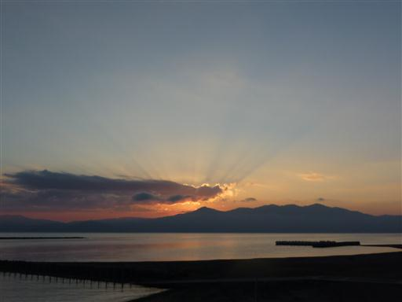
海岸には砂むしの施設が並んでいる。
砂の上に寝そべって熱い砂をかけてもらう、変わった入浴施設だ。
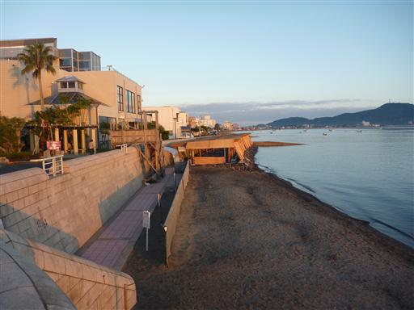
大隅半島の向こうから太陽が出てくる。
時刻は7:15で日の出の時間が遅いのは助かる。
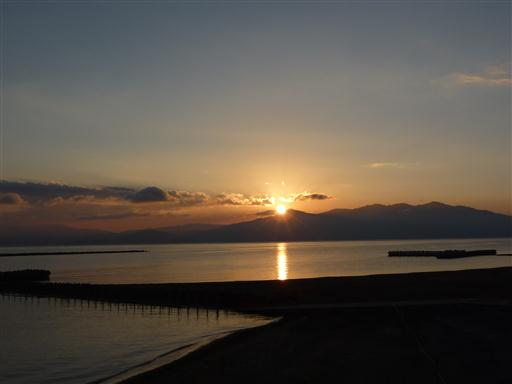
今日は指宿近辺の観光と、吹上浜に行く予定だ。
まずは指宿の町の中にある魚見岳に行ってみる。
車で山頂まで行くことができ、標高は低いが展望は非常に良い。

開聞岳は前方の山に邪魔されて頭だけが見えている。
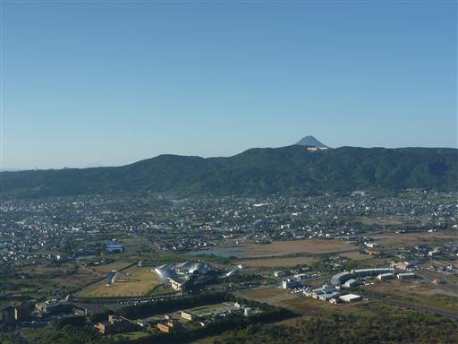
ハンググライダー離陸場。
今日は平日で誰もいないが、休日だと賑わうのだろうか？
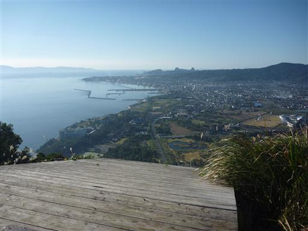
知林ヶ島が見えている。
この島は無人島だが、干潮時には砂の道が現れ歩いて渡ることができる。
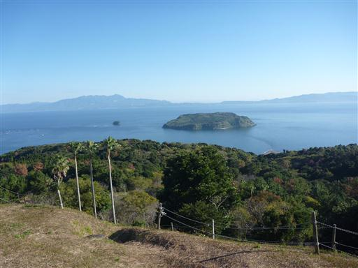
今はまだ道が隠れているが、わずかに黒い影が見えている。
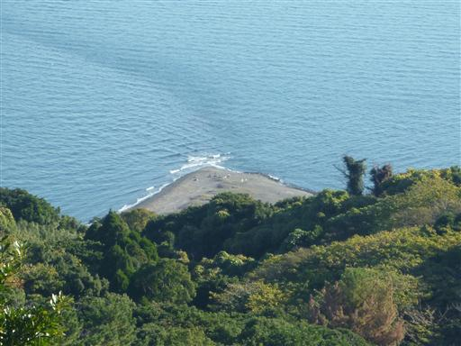
魚見岳から見て気になった知林ヶ島との海峡付近に来てみる。
左右両側から波が押し寄せている。
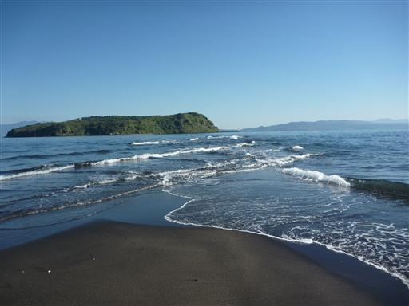
待っていると少しずつ少しずつ陸地が出てくる。
現れた陸地に描かれた波模様が美しい。
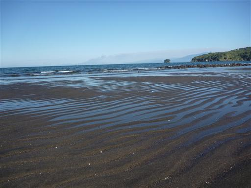
15分で数メートルという速度で道が伸びていく。
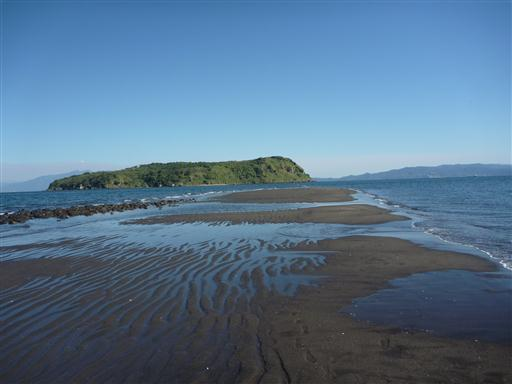
1時間半ほどで砂の道はだいぶ伸びた。
夏は最大4時間ほど道がつながるらしいが、春秋はつながる時間が短い。
冬は渡ることが禁止されている。
渡った先の知林ヶ島では遊歩道が整備されているらしく、渡ってみたかったが…
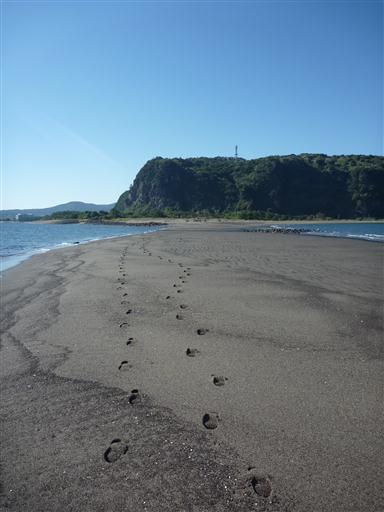
指宿を離れ吹上浜に行く。ここは日本三大砂丘の一つに数えられている。
といっても、日本三大砂丘を標榜している場所は全国で6か所あるらしく、
鳥取砂丘を除けば皆マイナーだ。
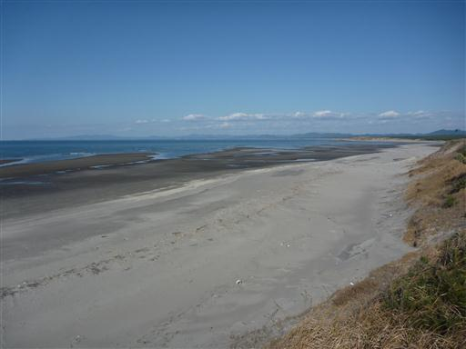
遠くには野間岳が見えている。低い山だがよく目立っている。
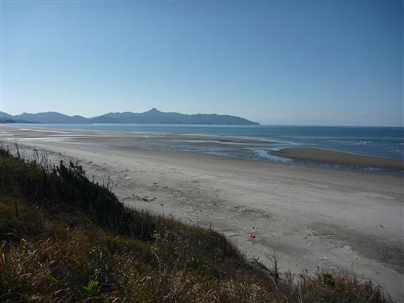
吹上浜に降りてみる。砂はさらさらで触ると気持ちがよい。
非常に長くて見事な砂浜だが、平らでやはり砂丘という感じはしない。
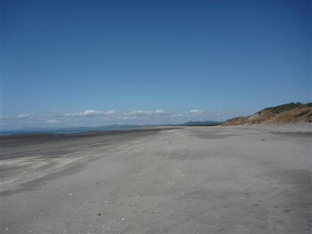
ちょうど干潮時で、水が引いた後の模様が浮き出ている。

砂丘より内陸側は広大な松林が広がっている。
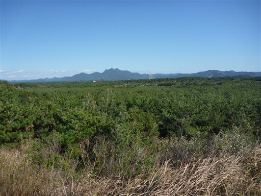
吹上浜の一角は吹上浜海浜公園が設けられている。
レンタサイクルで周囲を走ってみる。
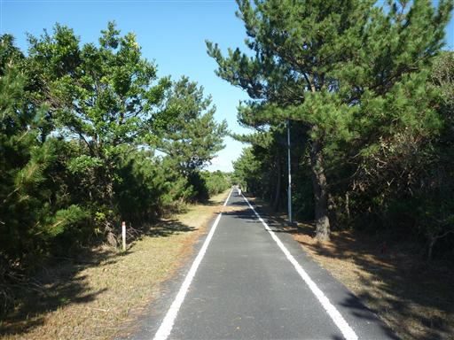
万之瀬川にかかるサンセットブリッジ。
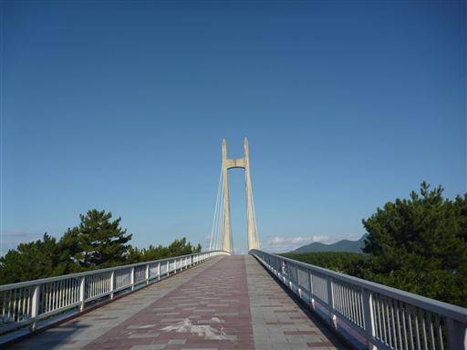
橋からの眺望。
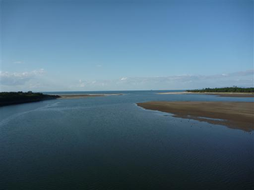
川の合流地点付近の砂浜には小さなカニがたくさん住んでいる。
穴の中に隠れていて、時々顔を出す。
辺り一面に広がっている砂のお団子はカニが捨てたものだ。
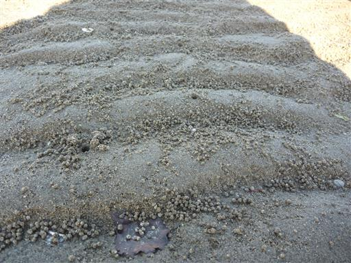
指宿へ帰るついでに野間岳に立ち寄ってみることにする。
低い山だが中腹の野間神社までは車で入ることができる。
野間神社に通じる道は非常に狭い道だった。
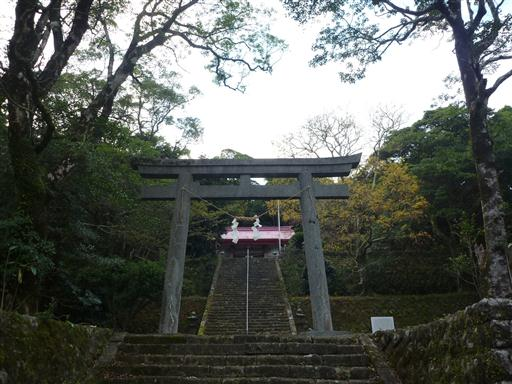
野間岳までは30分と標識にある。
もう暗くなってきているので一人走って山頂を往復することにする。
道は急傾斜の部分があり、それなりの登山道だ。
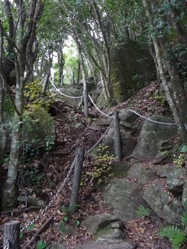
野間岳山頂到着。標高591m。
山頂には一等三角点が鎮座している。
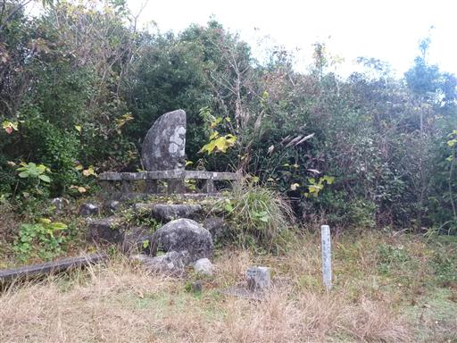
三角点の傍の高台に登ると、展望が大きく広がる。
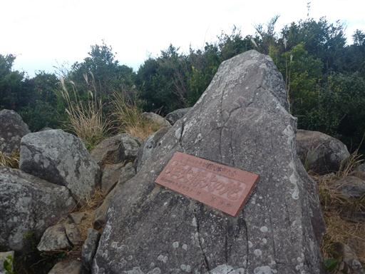
山頂から望む野間岬。付け根の部分に集落があり、
岬の真ん中あたりには風力発電所が見える。
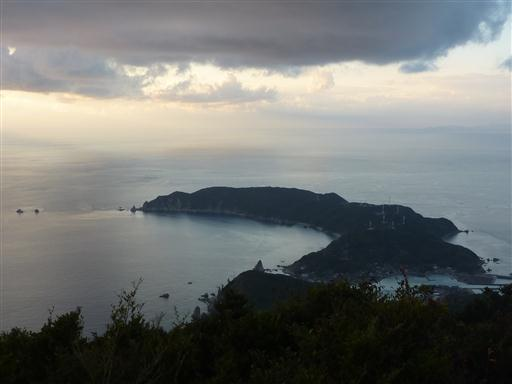
遠く屋久島と種子島も望むことができる。
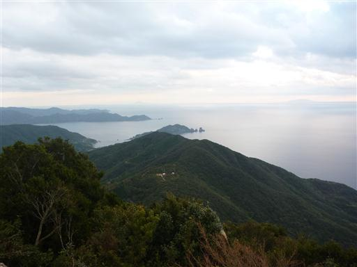
ここからでも開聞岳はよく目立っている。
今からあの麓まで戻らなくてはならない。
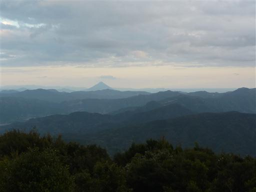
日がだいぶ落ちてきたので足早に下山する。往復30分だった。
指宿の宿に着いたのは19時ごろで、完全に真っ暗になってしまった。
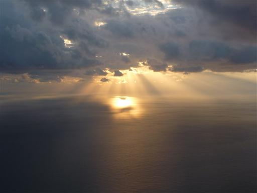